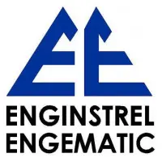
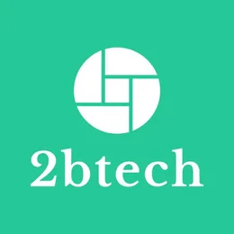

Sempre tive um grande interesse por tecnologia. Desde criança, sonhava em trabalhar com desenvolvimento, e hoje continuo aprendendo todos os dias, motivado pela curiosidade de criar e evoluir.
CurriculoDOMLILOW
Stranger Things
Envases
Tex Instrument
Saci Tintas | FATEC
Igreja Belem
O curso Técnico em Eletroeletrônica forma profissionais capazes de instalar, montar, manter e consertar equipamentos e sistemas elétricos e eletrônicos. Durante o curso, o aluno aprende sobre eletricidade, eletrônica, automação, comandos elétricos, interpretação de esquemas elétricos, uso de instrumentos de medição e normas de segurança, preparando-se para atuar na indústria e em diversos setores tecnológicos.
O curso de Tecnologia em Sistemas Embarcados forma profissionais capacitados para desenvolver soluções que integram hardware e software. Durante a graduação, o aluno adquire conhecimentos em programação, eletrônica, arquitetura de computadores, sistemas operacionais, redes, automação e desenvolvimento de dispositivos inteligentes, estando preparado para atuar na criação, manutenção e evolução de tecnologias utilizadas em diversos setores da indústria e da inovação.
O curso Técnico em Automação Industrial forma profissionais capazes de projetar, implementar e manter sistemas automatizados em ambientes industriais. Durante o curso, o aluno aprende sobre controle de processos, robótica, instrumentação, programação de CLPs, redes industriais e segurança, preparando-se para atuar na otimização e inovação de processos industriais.


A Sorotel é uma empresa especializada na produção e montagem de placas eletrônicas. Atua na fabricação, montagem e testes de circuitos eletrônicos utilizados em diversos equipamentos, seguindo padrões de qualidade para atender às necessidades de diferentes segmentos da indústria.
A Enginstrel é uma empresa especializada em soluções para instrumentação industrial, atuando na fabricação, instalação, calibração e manutenção de equipamentos utilizados no controle e monitoramento de processos industriais. Seu principal foco é em medidores de vazão, garantindo a precisão e a confiabilidade das medições em diferentes aplicações da indústria.
A 2BTech é uma empresa especializada no desenvolvimento de soluções tecnológicas para máquinas de venda automática (vending machines). Atua com sistemas de telemetria, monitoramento remoto e meios de pagamento eletrônico, oferecendo tecnologias que permitem acompanhar o desempenho das máquinas, gerenciar operações e facilitar as transações dos usuários.
A Envases é uma empresa do setor de embalagens especializada na fabricação de garrafas PET retornáveis para a indústria de bebidas. Seus processos envolvem a produção, inspeção e controle de qualidade das embalagens, atendendo aos padrões exigidos por grandes empresas do segmento, como a Coca-Cola.
Tem uma vaga, um projeto ou só quer trocar uma ideia sobre tecnologia? Escolha o canal que preferir — respondo por todos eles.
Vamos conversar